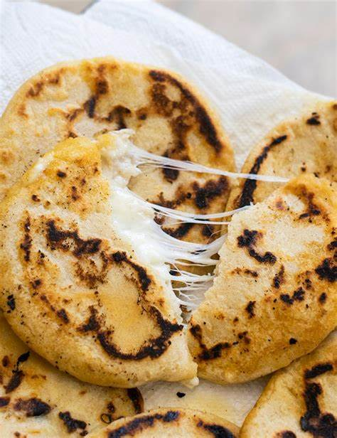

Cheese Pupusas

description:
The pupusa is a thick tortilla made from corn or rice dough filled with one or more ingredients such as cheese, chicharrón, ayote, refried beans, loroco, etc. Due to its tradition, versatility and low cost, it is one of the most widespread foods in El Salvador and Honduras, countries that dispute its heritage origin. Although its origin is not known with certainty, it is most likely a mestizo dish between native Mesoamerican cuisine and the Spanish culinary tradition that was imported during colonization and subsequent migrations.
\
ingredients:
- 3 cups masa harina flour (Mexican corn masa mix)
- 1 ½ cups water, or more as needed
- ½ teaspoon salt
- 1 cup ricotta cheese
- 1 cup shredded mozzarella cheese
- 2 tablespoons heavy whipping cream, or more to taste
- 2 tablespoons heavy whipping cream, or more to taste
- cooking spray
Steps
- Combine masa harina, water, and 1/2 teaspoon salt together in a large bowl; knead until a smooth, moist dough forms. Add water if dough cracks when you press down on it. Let dough rest, 5 to 10 minutes.
- Stir ricotta cheese, mozzarella cheese, heavy cream, and scallion together in a bowl to make a paste.
- Divide dough into 8 balls. Press your thumb into the center of each ball to form an indentation. Fill indentations with ricotta cheese paste. Pinch edges together around the filling; flatten and smooth into round 1/4 inch-thick patties between your palms.
- Grease a skillet with cooking spray; preheat over medium heat. Cook pupusas in batches until browned, 2 to 3 minutes per side.